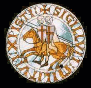
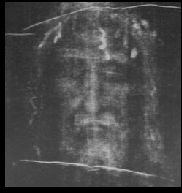
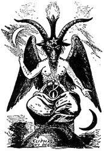
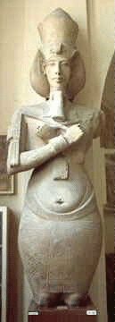
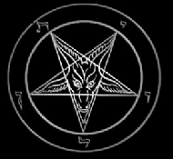

The origin of the name Baphomet is not clear. It appears to be a combination of two Greek words baphe and metis meaning “absorption of knowledge.” Other authors claim it is a corruption of “Mohamet” (Mohammed), but the first definition seems to be more accurate. Baphomet has its origins in the “Goat of Mendes.” Baphomet was also one of the aliases of Aleister Crowley. Baphomet has also been called the "Goat of Mendes" and the "Black Goat."
The goat also has to do with fertility and is symbolic of the Magnum Opus of alchemy when one's energies from kundalini increase. Spiritual alchemy is of Ancient Egypt and is the transformation of the human soul into the godhead. This is completing our Creator God Satan's work.
The most famous historical account of Baphomet began with the Knights Templar. The Baphomet at the time of the Templars was believed to be an idol, represented by a human skull, a stuffed human head or a metal or wooden head with curly black hair, or sometimes a black cat. The idol was said to be worshipped by the Knights Templar in their latter days as the source of fertility and wealth. The Knights Templars also known as the “poor knights of christ” was founded in the year 1118 by Hugh de Payens of Champagne France.
The order began with nine or eleven men who were sent to the Holy Land to dig beneath the "Temple of Solomon" for several European families of wealth who had claim to certain artifacts buried there before it was destroyed in 70 CE. The order took on the oath of asceticism, celibacy, devotion to the Catholic Church and poverty. They were forbidden ownership of any personal property. Any wealth accrued by the order was to be shared in common. When excavating beneath the temple, the knights discovered gold and ancient relics, and also many scrolls.
Shortly thereafter, magnificent cathedrals and other buildings sprung up all over Europe. Most of the Goetic/Gothic Demons are known for their expertise in architecture and there are legends claiming many bridges and buildings in Europe were built by Satan and his Demons.²
The true meaning of the "Temple of Solomon" is the TEMPLE OF THE SUN. "Sol" "Om" and "On" are all words for the Sun. "Sol" is the Latin word for the Sun and is close to the English word "soul." "Om" is a name given by the Hindus to the Spiritual Sun and "On" is an Egyptian word for Sun. The symbolism of the Temple of Solomon was stolen and made into an actual character, as with the fictitous nazarene and nearly everything in the Judeo/Christian Bible. For more information:
The Removal and Desecration of the Original Gentile Religious Texts- Ancient Gentile Religious Texts:
Replaced With Meaningless Rabbinical Drivel
and
Jewish Literary Filth
The Templars were eventually appointed to protect the Holy Land and keep it from the Moslems during the wars of the Crusades. The order grew into the thousands and groups were organized throughout Europe, but France remained their stronghold.
|  | Their seal depicts two men riding one horse because in the early history of the order, the knights could not afford a horse each.
During their journeys to and from the Holy Land in the Middle East, they encountered many different peoples. It is possible, they learned of the Goat of Mendes as the Moslems kept records and had knowledge of the history of Ancient Egypt where the Goat of Mendes originated. |
The Templars grew in both size and wealth, reaching their peak in the 14th century. The ending of the wars of the Crusades did not have any impact on the order as they used the opportunity to travel and enter into commerce and money lending. They established a very profitable business relationship with the enemy in times of truce. The order accumulated vast wealth and power. They eventually became the victims of both the greedy Catholic Church that was aware of their forbidden knowledge and King Philip IV of France who was said to be heavily in debt and owed the order a considerable sum.
*From what I have researched, it appears the real reason the Templar order was persecuted by the Catholic Church was for their occult knowledge and power they obtained from excavating beneath the Temple at the Dome of the Rock. This power brought them vast wealth as it is supposed to do for those who have it and the knowledge on how to use it.
Philip IV plotted along with Pope Clement V to destroy the order. October 13th 1307, Philip IV had Grand Master Jacques de Molay and 140 other knights arrested in the Paris Temple. More arrests followed throughout France.
The Templars were subjected to torture en masse. The Catholic Church with its inquisitors, accused them of Devil worship, blasphemy, sodomy, and idolatry. There was secrecy surrounding their meetings and wild rumors spread concerning bizarre initiation rituals that did much to promote public suspicion of the order. Under torture, members of the order admitted to renouncing the nazarene, spitting, trampling and urinating on the crucifix, engaging in intercourse with Demons, indulging in “sexual perversity” and to worshipping the idol of Baphomet. Many of the Templars were burned at the stake and murdered by the inquisition, the most noted being Grand Master Jacques de Molay. After being imprisoned and tortured for seven years, he was burnt alive at the stake.
|  | The Shroud of Turin was of the blood and body fluids of Jacques de Molay as he was laid on a soft feather bed to recover for more torture from the Catholic inquisitors. Upon close examination, it is obvious given the position of the body (the top part is shown below), there is no way this was the Nazarene. |
The shroud was also inspected by several diverse scholars who proved beyond any doubt, given the material and constituents, the item was no older than the 12th century. The Catholic Church being the prolific liar that it is, continues to scam people to this day
I would also like to add in revising this article in light of new knowledge, Christianity appears to have manifested with the Inquisition. It is nowhere near as old as the "two thousand years" they claim it to be. History is and has been rewritten with lies, while being destroyed at the same time.
A very blatant example is what is now and has been occurring in Iraq. What we have been indoctrinated to believe in history class is not necessarily the truth. Ancient relics and architecture speak for themselves. In addition, history was written and told by the winners of every war. Remember, there are always two sides to every account. One side is usually the only one that is heard along with permissible opinions only.
 | Along with the "Shroud of Turin lie (the Nazarene is fictitious and was stolen from an alchemical concept of a working which had its origin in some 18+ PAGAN Gods, such as Odin, who hung from a tree and Set who was crucified on a Furka, Osiris who died and was resurrected, etc.), many PAGAN Gods have been passed off as the Nazarene such as Apollo Images by the hundreds of Pagan Gods are now labeled as the Nazarene. This is no different from the Christianization of Pagan holidays, such as Easter (of Astaroth), the Yule |
Before he was murdered at the stake, Molay cursed both the Pope and the King and predicted the death of both within the year. (Both did die within that time period).
| The Baphomet evolved over the centuries. The most widely known representation of the Baphomet is the drawing by 19th century French magician Eliphas Levi called “the Baphomet of Mendes.” Levi combined the images of the Tarot Devil card and the he-goat worshipped in the city of Mendes in Ancient Egypt. It is unclear whether the Ancient Egyptian women had intercourse with the goat during religious rites for fertility, but the Catholic Church claimed this and this is more than likely where the notion that the Devil had intercourse with his witches came from. |  |
|  |
The Levi Baphomet is very similar to the Egyptian Akhenaton, which is both male and female (note the male and female features of the body and the serpentine facial features which symbolize the serpent kundalini) portraying the hermaphrodite which is symbolic of merging the male and female aspects of the soul, the ida and the pingala and achieving the godhead. The "monotheism" is another allegory, as the "gods" are in many ancient writings, code-words for the chakras of the soul and when one works to achieve the godhead of the Magnum Opus, all of the chakras are transformed and united into gold. Yoga is a branch of alchemy and the word "Yoga" means "union." This is the unification of the soul. Levi’s famous drawing of Baphomet depicts a male/female image representing the dualistic nature of life. Female breasts and the phallus, one arm masculine, the other feminine, one arm pointing up and the other pointing down representing the Hermetic principle of “as above, so below.” |
|  | The image continued to evolve over the years. Anton LaVey spotted an illustration in the book “A Pictorial History of Magic and the Supernatural” by Maurice Bessy © 1961, English edition © 1964. This was the first known published work where the goat headed pentagram was surrounded by two circles and included the Hebrew letters reading “Leviathan.” The names “Samael” and “Lilith” were also included in this depiction. "Leviathan" also known as "Cthulu" is a name for the kundalini serpent |
Anton LaVey eliminated the Samael and Lilith and decided this particular symbol best represented the Church of Satan and made it the Church’s logo in 1967. Because of the Hebrew lettering and the circles which are highly offensive to Satan and his Demons, JoS Ministries has removed them and replaced them with cuneiform script reading “Satan.”
The sign of Capricorn, symbolized by the goat represents the new winter sun being reborn again as the days get longer. The goat is one of Satan’s sacred animals. In the fifth century BCE, Herodotus reported that the people of Mendes in the Nile delta venerated all goats, particularly male ones. For the Greeks and Romans, the goat represented virility. Goats are fertile and known to be lusty. The city of Mendes reached its cultural peak when the Ram-God was worshipped, whom the Greeks later equated with Pan. Pan was known as a "satyr." Satyrs had the horns, legs, hooves, and beards of goats. Pan’s symbol was the phallus and he was invoked for the fertility of the flocks or an abundant hunt. He tended flocks and danced through the woods, playing his panpipes, which he invented. As the lusty leader of Satyrs, he chased the Nymphs.
The goat (sometimes a ram was used) was the master of fertility and was celebrated as “copulator in Anep and inseminator in the district of Mendes,” where women were blessed with children. During rituals, women danced naked before the image. The Order of Nine Angles claims another perspective to Baphomet. 7,000 years ago a civilization known as Albion had various rites associated with a Dark Goddess who was known as “Baphomet.”
References:
¹The Second Messiah : Templars, the Turin Shroud, and the Great Secret of Freemasonry by Christopher Knight and Robert Lomas. Published Shaftesbury, Dorset ; Boston : Element, 1997.
²Witchcraft, Magic and Alchemy by Grillot de Givry 1931; translated into English 1971.
Chapter XI: Involuntary Demoniacs
The Encyclopedia of Witches and Witchcraft by Rosemary Ellen Guiley © 1989 Entries on “Baphomet” pages 21-22 and “Knights Templar” pages 186-187
Cassel Dictionary of Witchcraft by David Pickering © 1996 Entries on “Baphomet” page 11, “Knights Templar” page 161
Secrets of Western Sex Magic by Frater U D ©2001 “The Ritual of the Goat of Mendes, page 192
At the Heart of Darkness, Witchcraft, Black Magic and Satanism Today by John Parker © 1993 page 202
Lucifer Rising by Gavin Baddeley © 1999 page 164 “The Sinister Dialectic”
Lammas, Celebrating the fruits of the Harvest by Anna Franklin and Paul Mason © 2001 Article on the Goat- page 166
© Copyright 2003, 2005, Joy of Satan Ministries;
Library of Congress Number: 12-16457